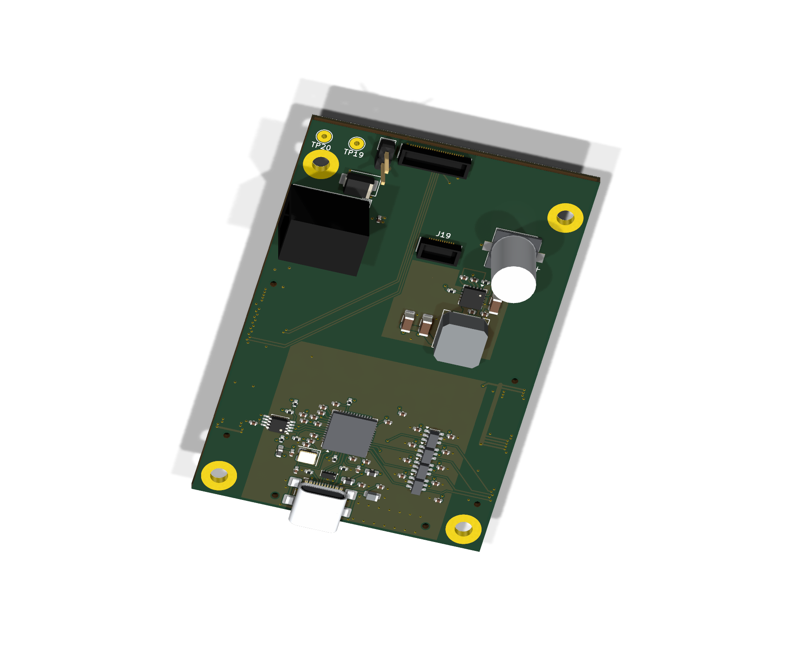
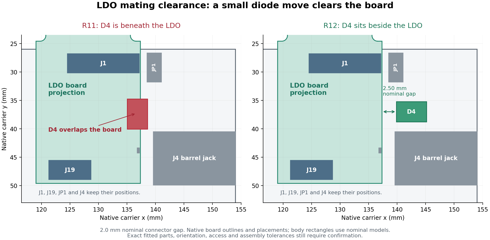

Connectors and power
MC1–MC3 connect to the XEM8305. J1/J19 face the LDO board underneath. The edge-facing barrel input supplies 12 V to the XEM and the 3.3 V converter; the converter supplies the LDO/ASIC assembly.
9 October 2026 · current carrier review
The same 53 × 83 mm carrier, with D4 moved beside Gerald’s LDO board to clear the mating space. Connector positions, ASIC signal routes and the six-layer stack are retained. Inspect all six routing layers, drag to pan and scroll to zoom, or rotate the 3D board with all 75 fitted components represented.

Loading native routing…
R12 · routing · top-view coordinates · Open routing SVG ↗Drag to pan · scroll/pinch to zoom · click a net
The actual LDO outline was aligned face-to-face using both J1 and J19. JP1 and the barrel jack are outside that outline. D4 previously extended underneath it: its SMB body can reach 2.5 mm high, while the connectors provide a nominal 2.0 mm board gap. R12 moves D4 outward, with 2.50 mm nominal side clearance to the LDO edge.

MC1–MC3 connect to the XEM8305. J1/J19 face the LDO board underneath. The edge-facing barrel input supplies 12 V to the XEM and the 3.3 V converter; the converter supplies the LDO/ASIC assembly.
Six layers separate signal routing, power and two DGND reference planes. The original form factor and R10 ASIC signal routes are retained. The mounting rings and TP19/TP20 are intentionally bare copper.
The native BRK8305 KiCad circuit was compared component by component: all 50 fitted JTAG positions and their connections are accounted for. C522, FB503 and C528 restore the reference shield filter and additional bypass.
The edge-facing USB socket is a deliberate mechanical adaptation. The EEPROM still needs programming and a hardware check in Vivado. Static PCB checks pass; powered operation, timing and assembled fit remain to be verified.
Open the R12 one-page schematic · Revision and check summary · Visual sources and hashes
Routing is drawn from the saved native R12 copper, pads, vias and filled zones. All routing layers use top-view coordinates; the rotatable 3D model shows both faces. These are CAD-derived review views. Package representations are simplified where needed; they are not photographs or proof of mating clearance. Native R12 PCB checks report zero violations, opens and schematic-parity findings under the retained settings. This is not a fabrication release.
R12 clears the identified D4 overlap. R11 routing and visuals remain available. The published R5 native CAD and four-layer Gerbers remain a separate earlier delivery; they do not match this six-layer revision.